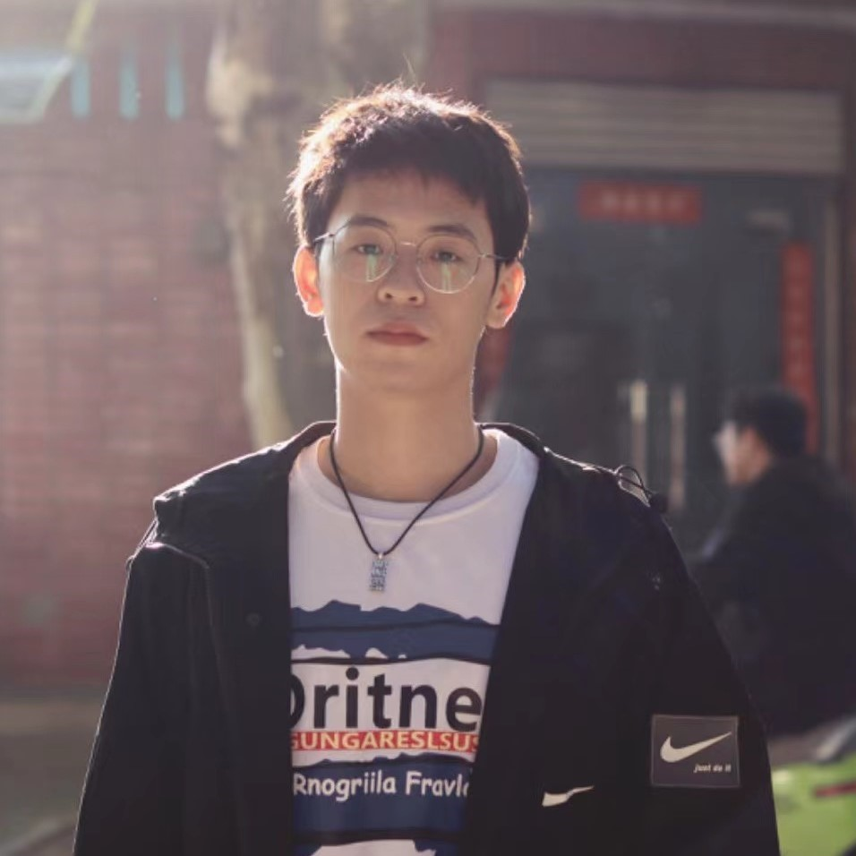
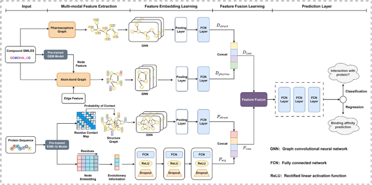
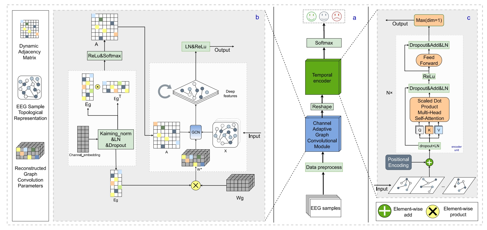
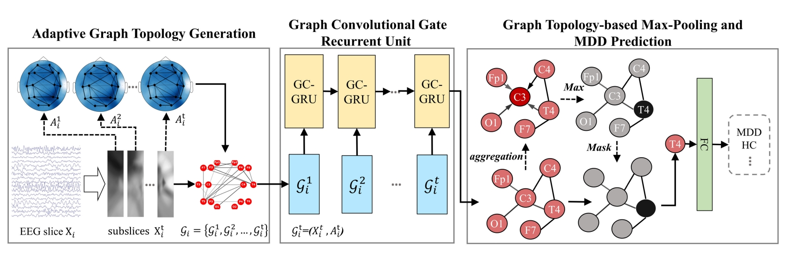

- [07/2024] One paper was accepted to ISMB 2024.
- [07/2024] One paper was accepted to CogSci 2024.
- [09/2023] One paper was accepted to IEEE-TNSRE 2023.
- ...
Gang Luo 罗钢PhD StudentCentral South University (CSU)School of Computer Science and Engineering Hunan, China, 410083. |
 |
Biography
I am a Ph.D. student in School of Computer Science and Engineering in the Central South University (CSU), advised by Prof. Min Li. Before that, I obtained my Master degree in the School of Mathematics and Computer Sciences, from the Nanchang University (NCU), China, supervised by Prof. Sheng-bo Chen and Prof. Hong Rao. I obtained my Bachelor degree in the School of Software from the East China University of Technology (ECUT), China.
I did research about Affective Computing, Brain-Computer Interactions, Bioinformatics, and Machine Learning before. Recently, I'm particularly interested in Bioinformatics and MLLM.
News
Publications
|  | Enhancing Generalizability and Performance in Target Interaction Identification by Integrating
Pharmacophore and Pre-trained Models.
Zuolong Zhang, Gang Luo, Xin He, Dazhi Long, Shengbo Chen. ISMB, 2024. (parallel publication in Bioinformatics, 2024.) [Paper] [Code] |
|  | Channel-adaptive Graph Convolution based Temporal Encoder Network for EEG Emotion Recognition.
Renxi Guo, Hong Rao, Shengbo Chen, Gang Luo, Panfeng An, Wenying Duan. CogSci, 2024. [Paper] [Code] |
|  | Exploring Adaptive Graph Topologies and Temporal Graph Networks for EEG-Based Depression Detection.
Gang Luo, Hong Rao, Panfeng An, Yunxia Li, Ruiyun Hong, Wenwu Chen, Shengbo Chen. IEEE TNSRE, 2023 [Paper] |
Collaborators
I have gotten to work with some wonderful collaborators.
|
|
ICBDA Lab Hong Rao, Prof of @NCU Shengbo Chen, Prof of @NCU Panfeng An, Postdoc of @SJTU |
© Gang Luo | Last updated: Oct. 2024.